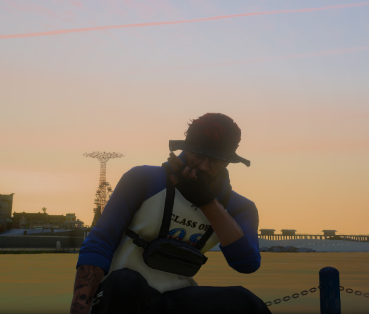
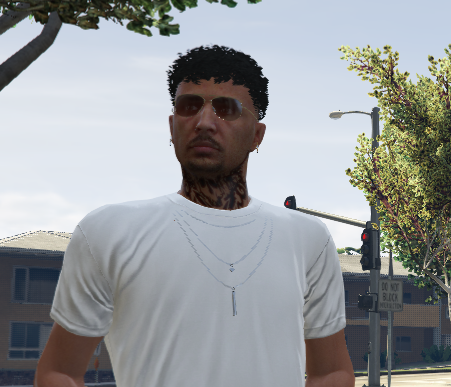

Lider operacyjny Marcelo Kweros

„Każdy pojazd ma drugą szansę. Ludzie też.”
Marcelo Kweros to człowiek, który przeszedł drogę od strat i chaosu do odpowiedzialności i profesjonalizmu. Dorastał w cieniu przestępczości Neapolu, ale swoją przyszłość postanowił związać z motoryzacją i ciężką pracą. Z czasem zdobył doświadczenie jako mechanik, ale również jako osoba zarządzająca ludźmi i biznesami.
Oprócz silnego zaplecza technicznego Marcelo ma naturalną zdolność do budowania relacji i atmosfery w miejscu pracy. Jako lider potrafi słuchać, rozwiązywać konflikty i motywować innych co w realiach warsztatu jest równie ważne, co klucz francuski.
Teraz stawia wszystko na stworzenie solidnego warsztatu w Sandy Shores i budowę prawdziwej marki. Marcelo wierzy, że każdy pojazd zasługuje na drugą szansę tak samo jak człowiek, który nim jeździ. Jego celem jest, aby Sandy Mechanic stał się synonimem uczciwości, szybkiej pomocy i stałej obecności w Blaine County.
Marcelo i Jacob tworzą zgrany duet, w którym jeden odpowiada za ludzi i technikę, a drugi za operacje i logistykę. To połączenie jest fundamentem tej firmy.
- Doświadczenie jako mechanik i w zarządzaniu biznesem.
- Umiejętność podejmowania decyzji pod presją.
- Lojalny wobec swojego zespołu i klientów.
Współzałożyciel Jacob Ferres

„Przetrwałem chaos, teraz buduję przyszłość.”
Jacob Ferres to człowiek, który przeszedł przez piekło i wrócił silniejszy. Po latach pracy przy przestępczych operacjach kartelowych i brutalnych starciach, wybrał nową drogę legalną, stabilną i pełną ambicji. Doświadczył świata, w którym błędna decyzja oznacza koniec. To nauczyło go zimnej precyzji, strategicznego myślenia i niezłomnej odporności psychicznej.
W Stanach Zjednoczonych zaczął od nowa. Ustabilizował życie, odkrył pasję do motoryzacji i dołączył do projektu Sandy Mechanic jako współzałożyciel. Jego wiedza o logistyce i organizacji, a także instynkt przywódcy sprawiają, że warsztat rozwija się w dobrym kierunku.
Jacob jest dowodem na to, że nawet najtrudniejsza przeszłość potrafi stać się fundamentem przyszłego sukcesu.
- Strategiczne podejście do rozwoju firmy.
- Doświadczenie w zarządzaniu operacjami.
- Wysoka odporność psychiczna i skuteczność w działaniu.